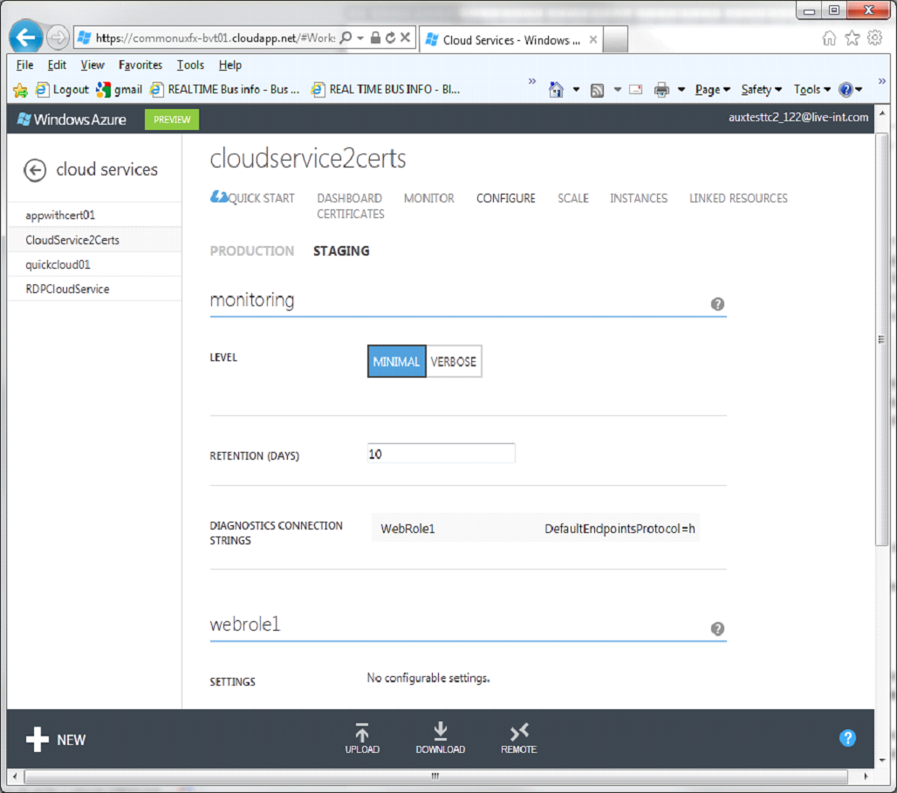
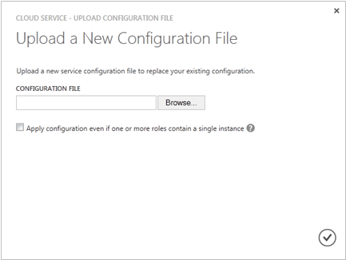

You can configure the most commonly used settings for a cloud service in the Windows Azure Preview Management Portal. Or, if you like to update your configuration files directly, download a service configuration file to update, and then upload the updated file and update the cloud service with the configuration changes. Either way, the configuration updates are pushed out to all role instances.
Windows Azure can only ensure 99.95 percent service availability during the configuration updates if you have at least two role instances (virtual machines) for every role. That enables one virtual machine to process client requests while the other is being updated. For more information, see Service Level Agreements.
Table of Contents
How to: Update the cloud service configuration
In the Windows Azure Preview Management Portal, click Cloud Services. Then click the name of the cloud service to open the dashboard.
Click Configure.
On the Configure page, you can configure monitoring, update role settings, and choose the guest operating system and family for role instances (virtual machines).

In monitoring settings, set the monitoring level to Verbose or Minimal, and configure the diagnostics connection strings that are required for verbose monitoring. For instructions, see How to Monitor Cloud Services.
For service roles (grouped by role), you can update the following settings:
Settings Modify the values of miscellaneous configuration settings that are specified in the ConfigurationSettings elements of the service configuration (.cscfg) file.
Certificates Change the certificate thumbprint that's being used in SSL encryption for a role. To change a certificate, you must first upload the new certificate (on the Certificates page). Then update the thumbprint in the certificate string displayed in the role settings.
In operating system settings, you can change the operating system family or version for role instances (virtual machines), or choose Automatic to resume automatic updates of the current operating system version. The operating system settings apply to web roles and worker roles, but do not affect VM roles that were added to hosted services in the previous Windows Azure Management Portal.
When you deploy a new cloud service, you can choose either the Windows Server 2008 R2 or Windows Server 2008 with Service Pack 2 (SP2) operating system. During deployment, the most recent operating system version is installed on all role instances, and the operating systems are updated automatically by default.
If you need for your cloud service to run on a different operating system version because of compatibility requirements in your code, you can choose an operating system family and version. When you choose a specific operating system version, automatic operating system updates for the cloud service are suspended. You will need to ensure the operating systems receive updates.
If you resolve all compatibility issues that your apps have with the most recent operating system version, you can resume automatic operating system updates by setting the operating system version to Automatic.

To save your configuration settings, and push them to the role instances, click Save. (Click Discard to cancel the changes.) Save and Discard are added to the command bar after you change a setting.
To update a cloud service configuration file manually
Download a cloud service configuration file (.cscfg) with the current configuration. On the Configure page for the cloud service, click Download. Then click Save, or click Save As to save the file.
After you update the service configuration file, upload and apply the configuration updates:
a. On the Configure page, click Upload.
Upload a New Configuration File opens.

b. In Configuration file, use Browse to select the updated .cscfg file.
c. If your cloud service contains any roles that have only one instance, select the Apply configuration even if one or more roles contain a single instance check box to enable the configuration updates for the roles to proceed.
Unless you define at least two instances of every role, Windows Azure cannot guarantee at least 99.95 percent availability of your cloud service during service configuration updates. For more information, see Service Level Agreements.
d. Click OK (checkmark).
How to: Configure remote access to role instances
Remote Desktop enables you to access the desktop of a role instance running in Windows Azure. You can use a Remote Desktop connection to troubleshoot problems with your application. If you configure the service definition file (.csdef) for Remote Desktop during application development, you can complete or modify the Remote Desktop configuration in the Management Portal. First, you’ll need to upload a certificate to use for authentication during Remote Desktop Protocol (RDP) password encryption.
On the Configure page, you can complete the Remote Desktop configuration or change the local Administrator account or password used to connect to the virtual machines, the certificate used in authentication, or the expiration date.
Note If your cloud service consists of two or more connected Windows Server-based virtual machines, you don’t have to configure remote access, as these virtual machines are configured automatically for Remote Desktop.
Before you begin
- Before you deploy your cloud service, configure your application for Remote Desktop.
You must add <Import> elements to the service definition file (.csdef) to import the RemoteAccess and RemoteForwarder modules into the service model. When those modules are present, Windows Azure adds the configuration settings for Remote Desktop to the service configuration file. To complete the Remote Desktop configuration, you will need to import a certificate to Windows Azure, and specify the certificate in the service configuration file. For more information, see Overview of Setting Up a Remote Desktop Connection for a Role.
To configure or modify Remote Access for role instances
In the Management Portal, click Cloud Services. Then click the name of the cloud service to open the dashboard.
Open the Configure page for the cloud service, and click Remote.
Configure Remote Desktop Settings displays the settings that were added to the service configuration file when the cloud service was deployed, as shown below.

In Roles, select the service role you want to update.
Make any of the following changes:
To enable Remote Desktop, select the Enable remote desktop check box. To disable Remote Desktop, clear the check box.
Create an account to use in Remote Desktop connections to the role instances.
Update the password for the existing account.
Change the certificate used in authentication. First, upload the certificate using Upload on the Certificates page. Then enter the new certificate thumbprint.
Change the expiration date for the Remote Desktop configuration.
When you finish your configuration updates, click OK (checkmark).
To test the Remote Desktop configuration, connect to a role instance:
a. Click Instances to open the Instances page.
b. Click a role instance that has Remote Desktop configured to select the instance.
c. Click Connect, and follow the instructions to open the desktop of the virtual machine.